Kumano, Hiroshima: things to do, food and stays
Kumano · Hiroshima
Kumano
Highlighted on the Hiroshima map.

Stay
No bookable places to stay found in Kumano — nearest options in Kaita.
Dining
よねだ屋
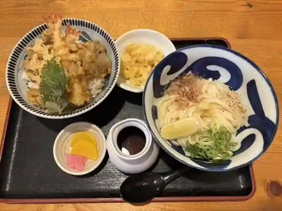
Yoneda Ya
碧ちゃ家
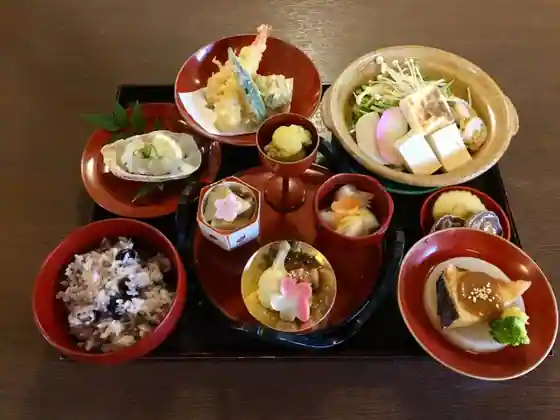
Heki Cha Ie
おか半 総本店
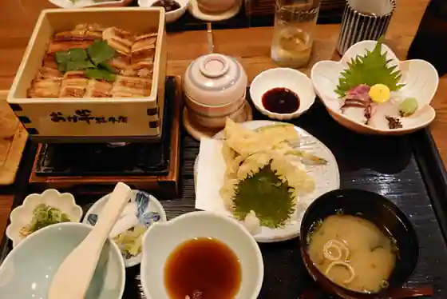
Oka Han So Hon
ふくえどぅ
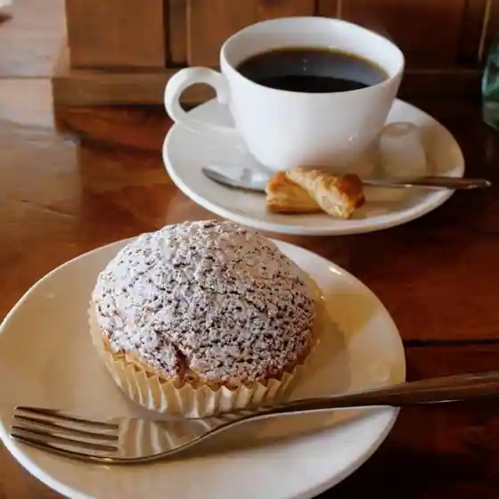
Fukuedo
Ｃａｆｅ照
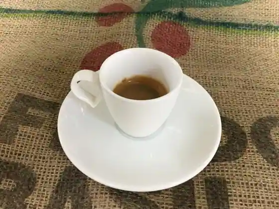
Cafe Sho
焼肉ハウス ファミリー
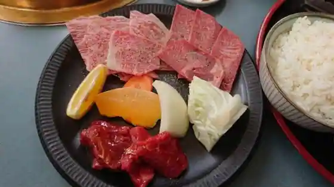
Yakiniku House Famiri
そばきりらいちょう
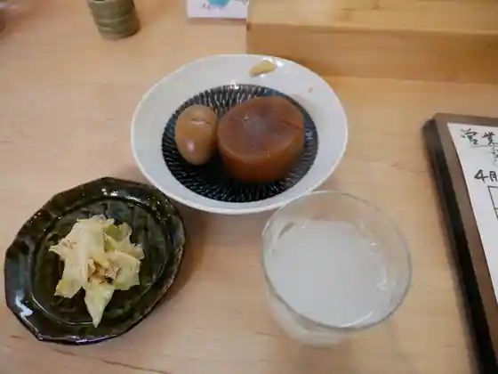
Sobakiriraicho
Patisserie faisunreve
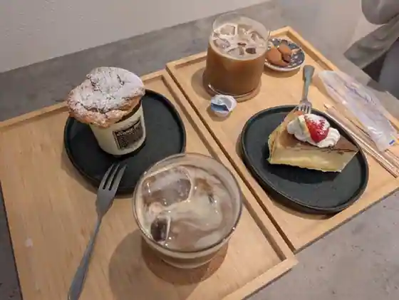
Patisserie faisunreve
蕎麦屋 道幸
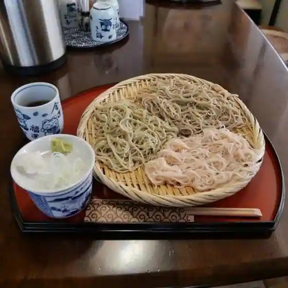
Sobaya Doko
美味しい集会所 平和園 熊野店
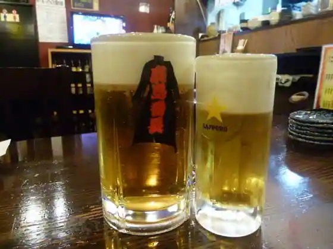
Oishi Shukaijo Heiwa Sono Kumano
my-cafe
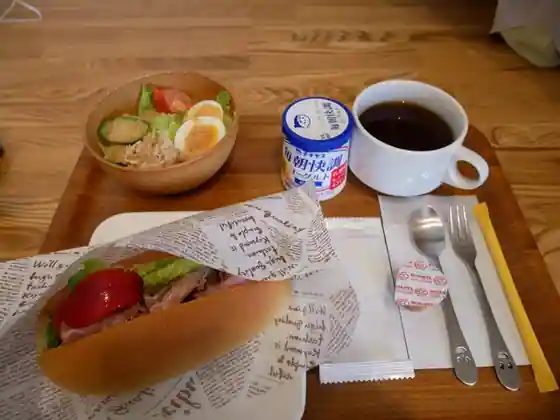
my-cafe
和木お食事処
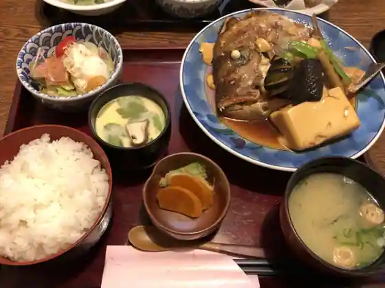
Waki O Shokuji Tokoro
六分儀
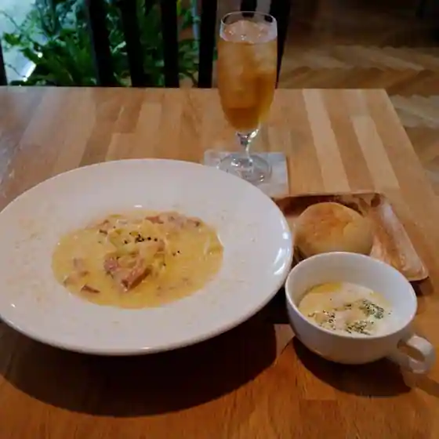
Rokubungi
洋食だいにんぐなかむら
Yoshoku Dainingunakamura
お好み焼き ぼちぼち
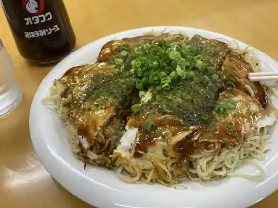
O Konomi Yaki Bochibochi
食事処 打鐘
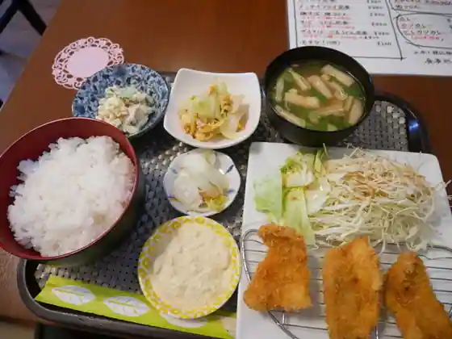
Shokuji Tokoro Da Kane
MATSURI 喫茶&雑貨
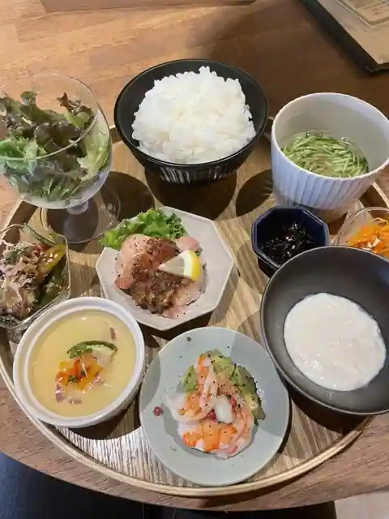
MATSURI Kissa & Zakka
tomobio drink stand
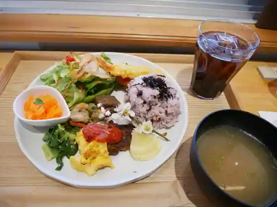
tomobio drink stand
カフェ 不二 熊野店
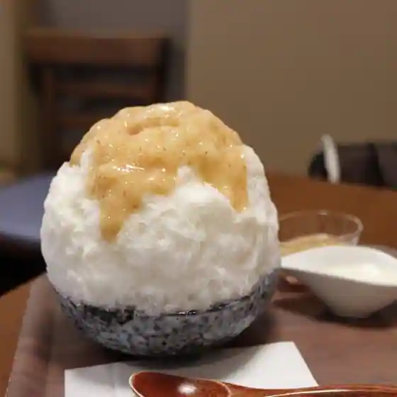
Cafe Fuji Kumano
お好み焼鏡
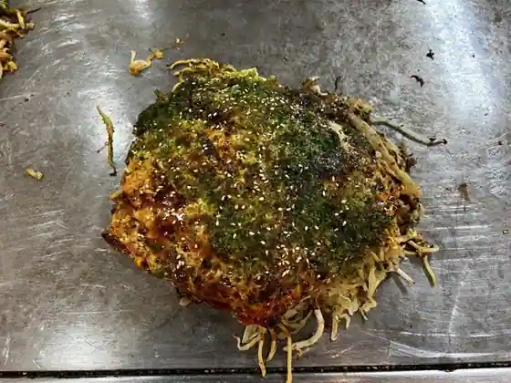
O Konomi Yaki Kagami
sweet box
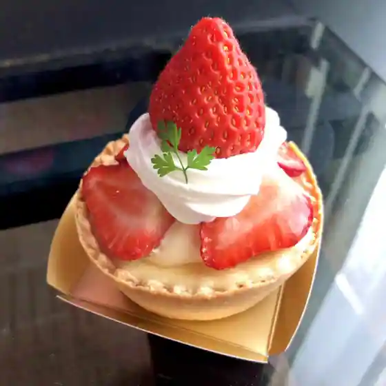
sweet box
雅
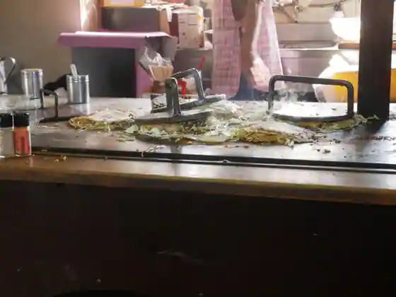
Masa
お食事処&Cafe まるみ庵
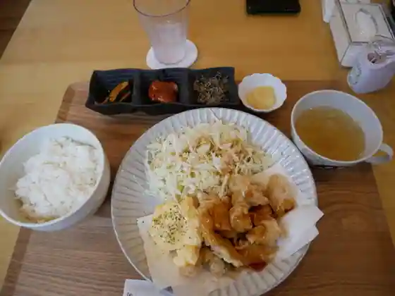
O Shokuji Tokoro &Cafe Marumi Iori
やさしいごはん
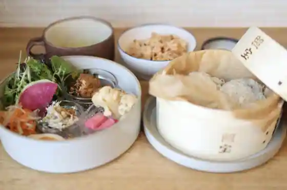
Yasashigohan
Sights
Fude no Sato Workshop

Sakakiyama Shrine
Kumano Kyodo Kan
Kumano Motomiya Shrine
Saiko Tera